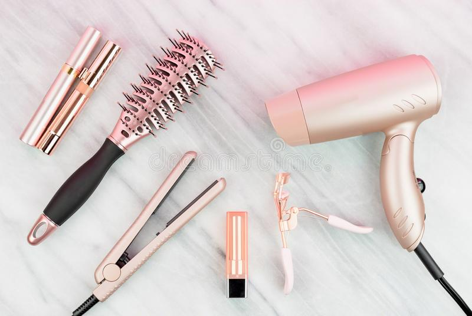
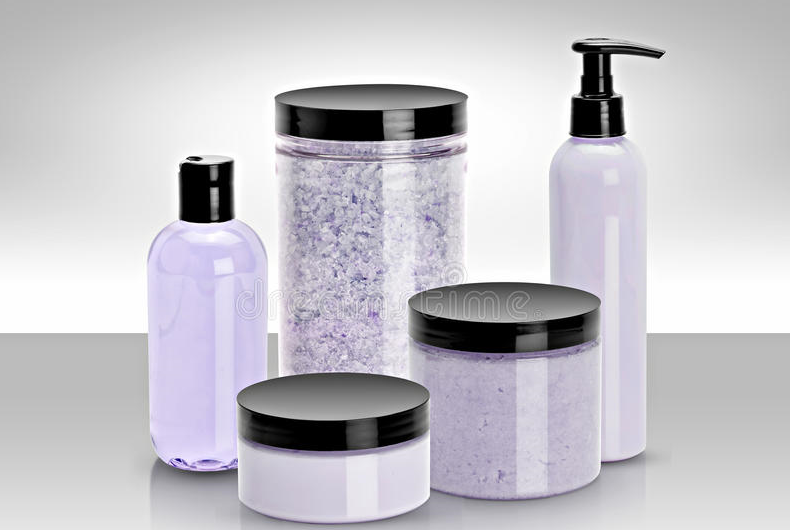

Hair Dryer
A hair dryer, hairdryer or blow dryer is an electromechanical device that blows ambient or hot air over damp hair to speed the evaporation of water to dry the hair.A hair dryer, hairdryer or blow dryer is an electromechanical device that blows ambient or hot air over damp hair to speed the evaporation of water to dry the hair

Creams,Gel,Moisturizers
Daily, beauty care cosmetic and make-up products. Face cream, eye cream, serum and lip balm located on a white background.A hair dryer, hairdryer or blow dryer is an electromechanical device that blows ambient or hot air over damp hair to speed the evaporation of water to dry the hair
Face Cream,Eye Liner
Creams are semi-solid emulsions of oil and water. They are divided into two types: oil-in-water (O/W) creams which are composed of small droplets of oil dispersed in a continuous water phase, and water-in-oil (W/O) creams which are composed of small droplets of water dispersed in a continuous oily phase.